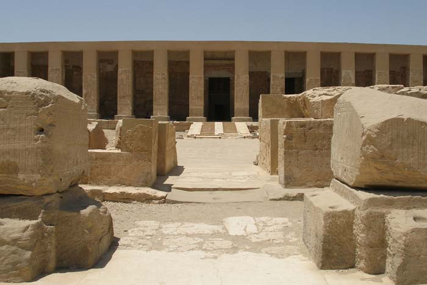
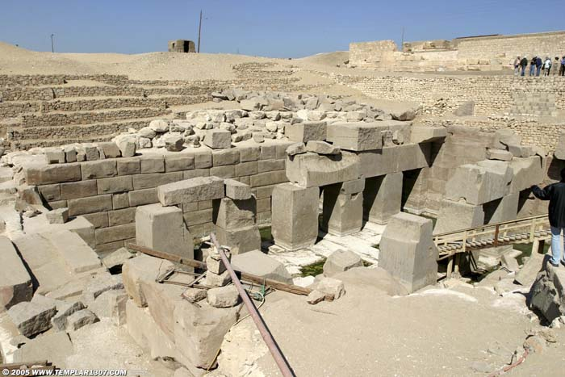
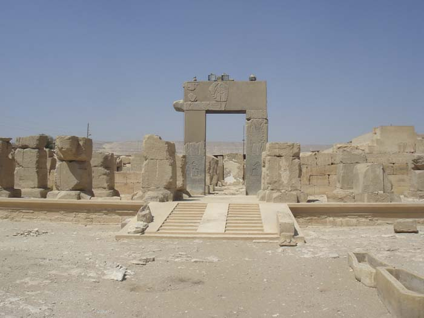

Abydos Temples
Located in northern Upper Egypt, Abydos has been a sacred site to the Egyptians since predynastic times. Wepwawet, the jackal-headed god, held it sacred and it was believed that he “opened the way” to the world of the dead through Abydos. The ancient Egyptians have always held their dead in high regard and revered them with respect.
Abydos is the cult center of Osiris, god of the dead. The necropolis is a place of pilgrimage and burial and at least ten temples were originally constructed here. Among those ten temples, three remain that are of special note. These include the Temple of Seti I, the Great Osiris Temple and the Ramses II Temple. Among these three, the Temple of Seti I is the most well-preserved.
The Temple of Seti I
The Temple of Seti I
Built circa 1300 BC by Seti I and his son (Ramses II), the main monument of the Temple of Seti I contains many detailed reliefs that are among the best of the New Kingdom. It originally stood 550 feet in length and 350 feet wide. This temple was dedicated to the gods Horus, Osiris, Isis, Amun-Ra, Ra-Horakhty and Ptah. The Temple of Seti I is a little out of the ordinary because it is L-shaped, unlike other Egyptian temples. At the entrance to the temple on the north end, the remains of a pylon and forecourt contain reliefs of Ramses II defeat at Qadesh.
Made of sandstone and limestone, the Temple of Seti I houses many sanctuaries. Two courtyards lead up to the main entrance, and then a Hypostyle hall. The Hypostyle hall has columns that support the roof. There are 24 of these papyrus-style columns and they contain reliefs of different aspects of Ramses II life. One of the scenes depicts Khnum, the God of Creation and Waters creating Ramses II in the presence of Ptah. Another scene depicts Ramses II being nursed by Hathor and Isis. Still another scene is of the king’s purification ceremony. These columns form seven aisles that lead to the second Hypostyle hall, and onto the unusual seven chapels.

Image: Temple of Seti I at Abydos
The second Hypostyle hall contains 36 lotus-bud columns with reliefs of exceptional quality including fertility figures. The seven chapels beyond the Hypostyle hall were dedicated to Seti I, Ptah, Ra-Harakhte, Amun Re, Osiris, Horus and Isis. The Osiris chapel leads to the Osiris complex which itself contains halls and chapels. Each of these chambers has a stele, which is a commemorative stone slab that honors the chamber's specific god.
One of the most interesting aspects of the Temple of Seti I is the Abydos King List, also called the Abydos Table. This list contains the names of 76 kings and pharaohs of ancient Egypt. There are three rows with 38 cartouches on each row. A cartouche is an oval with a horizontal line on one end, expressing that the text inside the oval is a name of royalty. “Unfit” pharaohs were not included on this list. A couple of the “unfit” pharaohs were Hatshepsut and the Amarna pharaohs like King Tut.
Another interesting feature inside the Temple of Seti I are the mysterious hieroglyphs. Today, they resemble modern day machines like a yacht, submarine, fighter plane and helicopter. This is likely the result of erosion and writing over original inscriptions which left the remaining text to look like modern day vehicles. Dating back 3,000 years, these mysterious hieroglyphs at first stumped the public and Egyptologists, but the debate has been put to rest and linked to years of wear and tear.

Image: Ruins at The Great Osiris Temple
The Great Osiris Temple
About a half a mile northwest of the Temple of Seti I lies the Great Osiris Temple. Unfortunately, because it was originally constructed in mud brick, most of the temple lies in ruins. All that remains of the Great Osiris Temple is its wall, which is now known as an enclosure. Dating back to the Old Kingdom, the Great Osiris Temple was dedicated to the god Khenty-Amentiu, a major funerary deity who eventually became integrated with Osiris. Some of the items found here include a 1st Dynasty vase and small figures of men and animals. The Festival of Osiris originated at this temple.

Image: The Remses II Temple at Abydos
The Ramses II Temple – also called the “Portal Temple”
In addition to building the Temple of Seti I with his father, Ramses II also built his own temple, about 300 yards northwest of his father's. Constructed from limestone with sandstone pillars, this temple is colorful and more modern than the Temple of Seti I. The Ramses II temple boasts door frames made of pink and black granite, with a sanctuary made of alabaster. At the entrance are a ruined pylon and court with a pink granite portal leading into a peristyle court (no roof). The second court is surrounded by pillars that depict Ramses II in an Osirid pose. An Osirid pose resembles the look of a mummy, with arms crossed across the chest. A portico leads to two halls flanked by pillars with chapels off those halls. Dating back to the Middle Kingdom, reliefs of the Battle of Kadesh are found here.